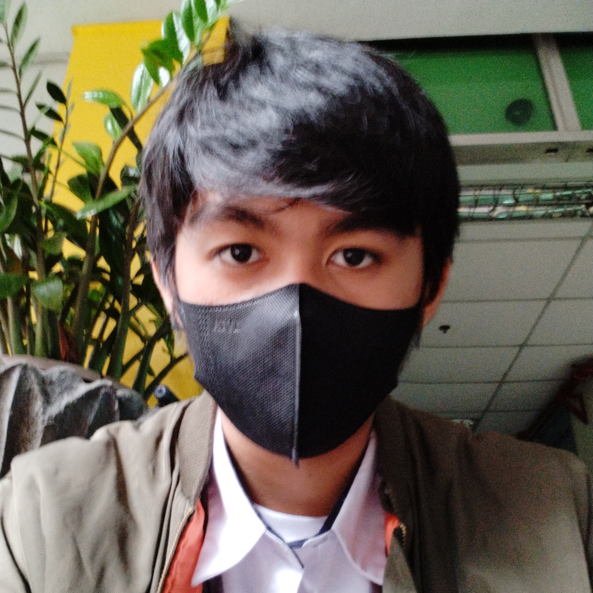

Ken Andrew Francisco
Web and Mobile App Developer
Personal Info
Portfolio Highlights
|
Career AchievementsFrontend Developer [Co-Founder] at NocturnalGames Community InvolvementActive participant in local and online developer communities such as itch.io. |
Academic QualificationsUndergraduate (BS in Information Technology) from Cavite State University Specializations:
|